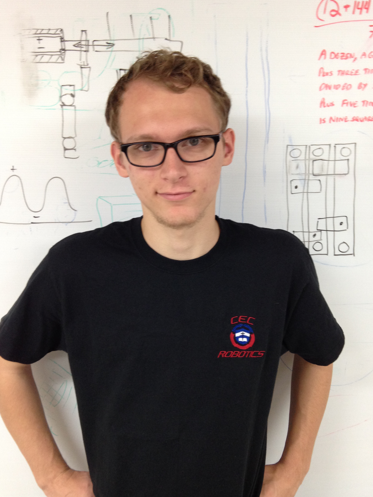
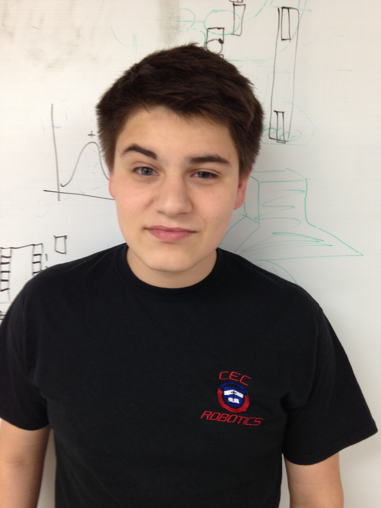
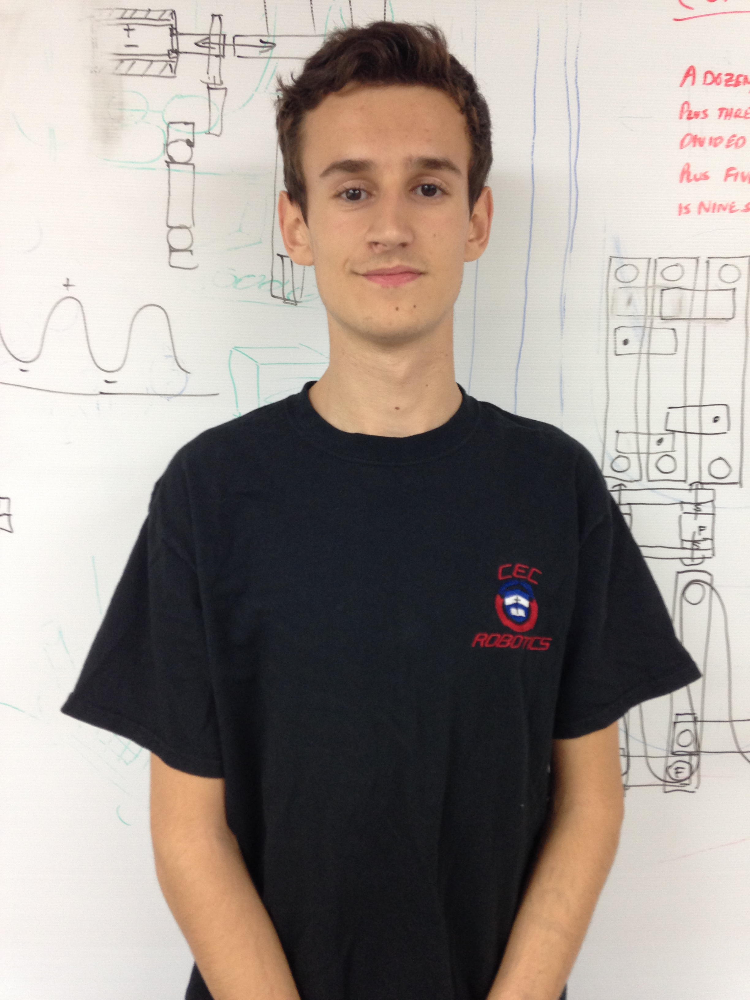
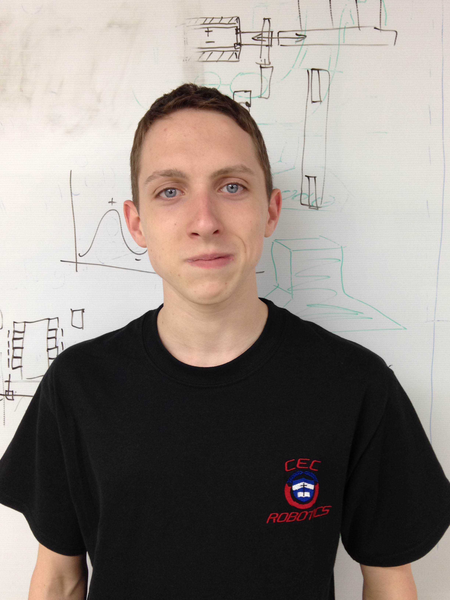
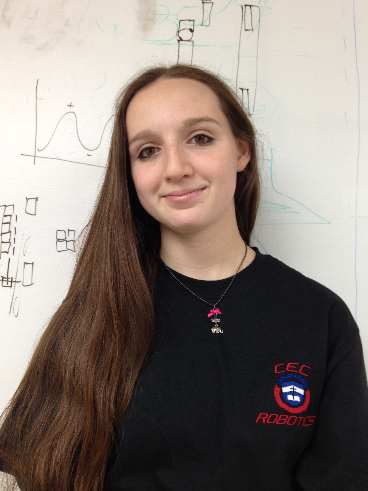
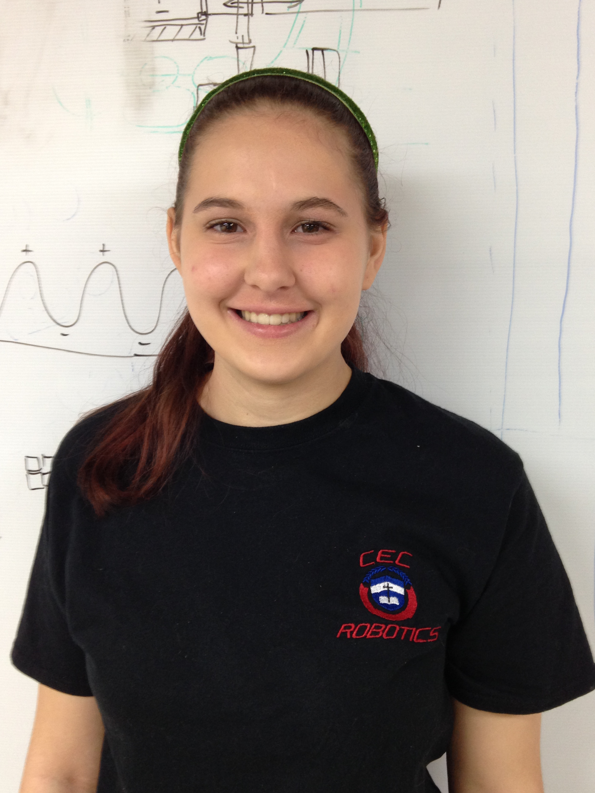
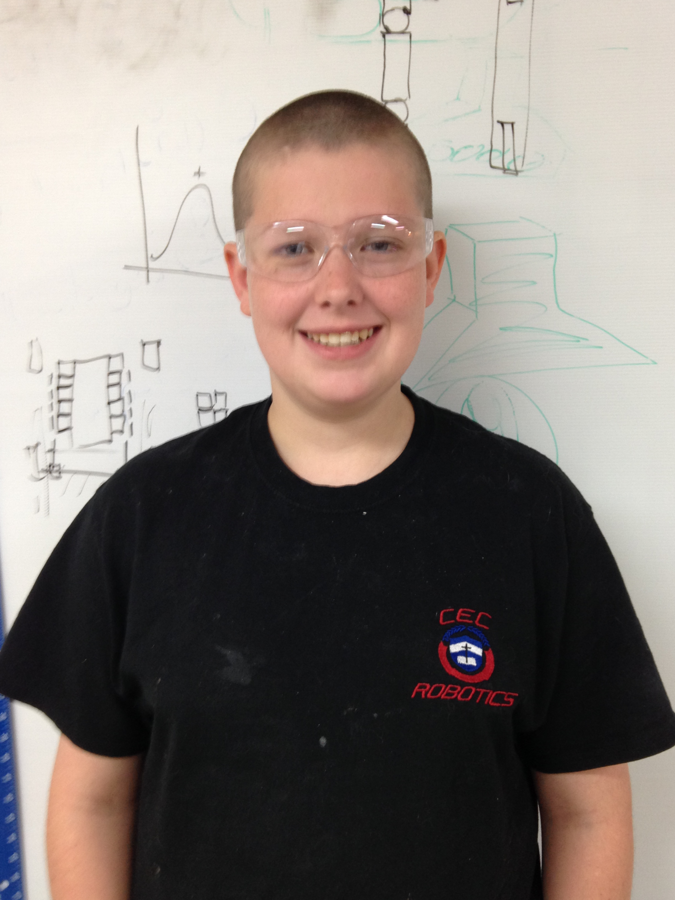
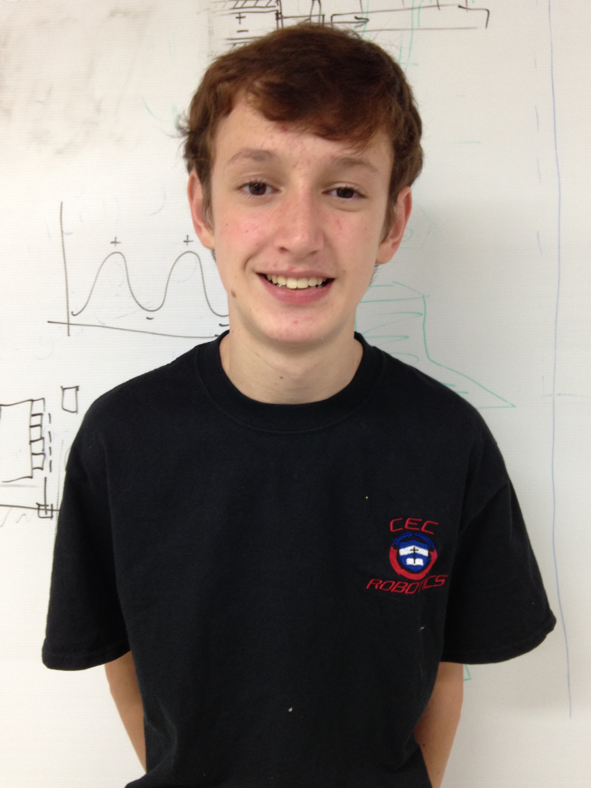

Wyatt
Wyatt Chanley is a 17 year old highschool junior who enjoys the occasional mock sword fight, in depth reading, and
of course, videogames. Wyatt was born in San Diego, California and this has had no effect upon his overall behaviour.
Seriously. Wyatt plans on being a bio-engineer when he gets older, and has plans to be the real life Tony Stark...
a kid can have dreams.

Andrew
Andrew Halverson is a 15 year old sophomore in high school. He likes to install, uninstall, and break the Arch Linux on his computer, as well as submit the occasional bug fixes to GNOME, and is constantly on the forums for his favorite game of all time, Freelancer. Andrew is the main programmer for the team, and wants to be a Linux SysAdmin when he graduates college.

Zac
Zac Lewis is a 16 year old junior who enjoys playing drums, building, and swimming. He is one of the main builders for the
team, and has done FLL for three years and FTC for two. Zac enjoys tinkering with things, playing video games, and blaring
loud music. He plans on becoming either a mechanical engineer or architect, but he doesn't know for sure yet.

Nathan
Nathan Pomles is a 17 year old junior at CEC. He is on an FRC team and helps coach an FLL team. On both the FRC and FTC teams, he is involved with CAD.
Besides robotics, he likes camping, backpacking, and climbing. His favorite band is Demon Hunter.
He plans to be a mechanical engineer or architect.

Caedyn
Caedyn Skiff is a high-school junior who is in her second year in FTC. She is a Carolina
Girl in a Kentucky world. Her main passion is for elephants, and volunteers with the elephants at the Louisville Zoo every
week. She is planning on majoring in either zoology or biology in college.

Amelia
Amelia Winrich is a 16 year old junior at CEC. This is her first year on the team.
Although she's not a future engineer, she enjoys the robot building process. She works on the design aspect of the robot
attachments. Some of the things she has learned on this FTC team is gratious professionalism, CAD design, and teamwork.

Austin
Austin Aldrich is a 15 year old sophomore at CEC. This is his first year in FTC. He was born in Wisconsin, and moved to Louisville when he was nine. He is working on the sweeper/forklift. He likes video games and hanging out with friends.

Hunter
Hunter Lewis is a 14 year old freshman at CEC. He is on his first year of FTC. He has done FLL for three years and was an honorary member
of the FTC team last year. He is a programmer and builder on the team. He likes to swim and dreams of working at SpaceX.